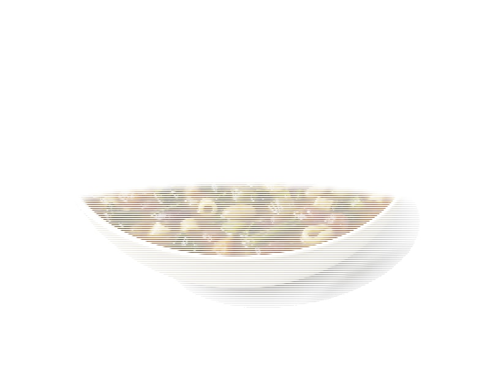

Zupy
Minestrone
Minestrone: 2 g białka, 45 kcal, 7 g węglowodanów i 1.2 g tłuszczu na 100 g. Kategoria: Zupy.
Kalorie45 kcalna 100 g
Białko / proteiny2 g
Węglowodany7 g
Tłuszcz1.2 g
Cena (szac.)~1,23 złza 100 g
Ceny zaktualizowano: maj 2026 (szacunek — ceny w popularnych supermarketach)
Porcja: miska (350g)
| Kalorie | 158 kcal |
|---|---|
| Białko | 7 g |
| Węglowodany | 24.5 g |
| Tłuszcz | 4.2 g |
| Cena (szac.) | ~4,29 zł |
Szczegółowe składniki odżywcze na 100 g
| Wartość energetyczna (kalorie) | 45 kcal |
|---|---|
| Białko (proteiny) | 2 g |
| Węglowodany | 7 g |
| Tłuszcz | 1.2 g |
| Tłuszcze nasycone | 0.3 g |
| Tłuszcze nienasycone | 0.9 g |
| Witaminy i minerały | Witamina C, Likopen, Potas |
| Współczynnik kcal / 1 g białka | 22.5 |
| Cena produktu (szac. za 100 g) | ~1,23 zł |
| Cena za 100 g białka (szac.) | ~61,29 zł |